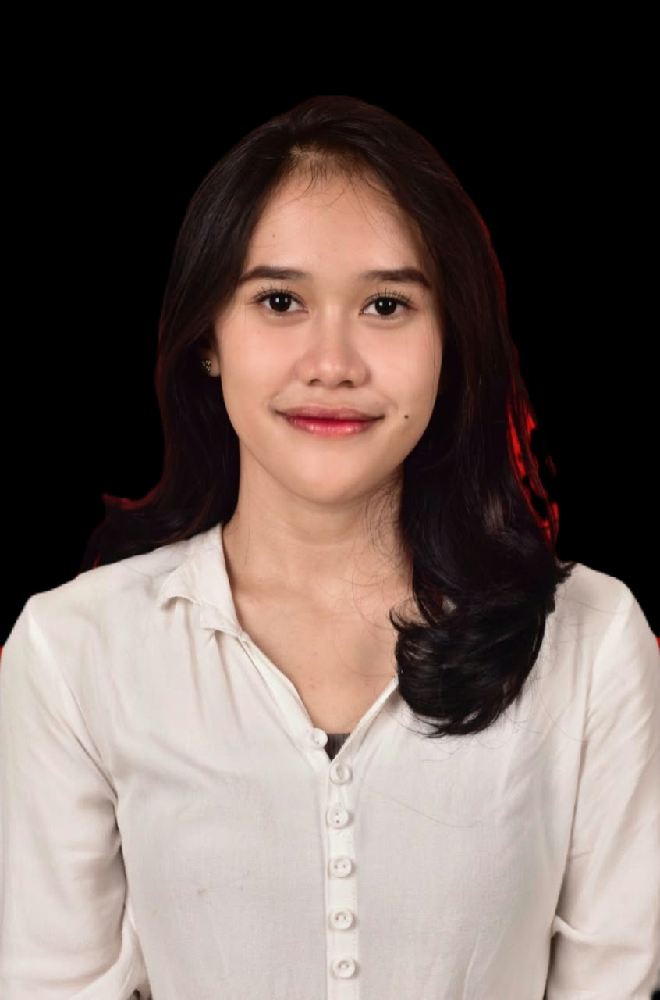

Editor video pendek dan copy wryter yang cepat belajar dan siap berkontribusi sejak hari pertama.
ADINDA KHOIROTUNNISA · Video Editor (Reels & TikTok) & Copywriter

Profesional yang berdedikasi dan adaptif di Bandung dengan pengalaman lebih dari 2 tahun di bidang administrasi perkantoran, layanan pelanggan (customer service / food service), serta promosi penjualan ritel. Memiliki rekam jejak teruji dalam pengelolaan dokumen, pembukuan keuangan organisasi, serta komunikasi publik. Memiliki latar belakang seni pertunjukan (perkusi & tari jaipong) yang membentuk kedisiplinan kerja, kreativitas tinggi, serta kemampuan berkolaborasi dalam tim secara efektif.
Saya mencari perusahaan untuk berkarier jangka panjang. Keunggulan saya: cepat beradaptasi dengan pekerjaan baru dalam waktu singkat.
Terbuka untuk pekerjaan penuh waktu maupun freelance editor Reels dan TikTok.
EmailLinkedInWhatsAppUnduh CV